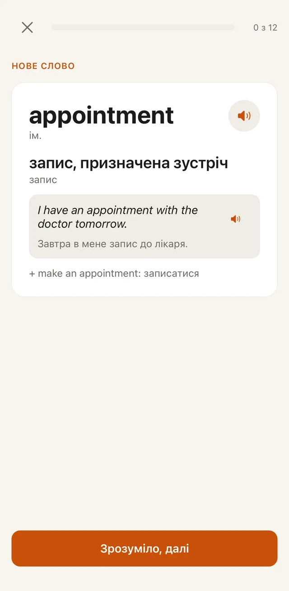
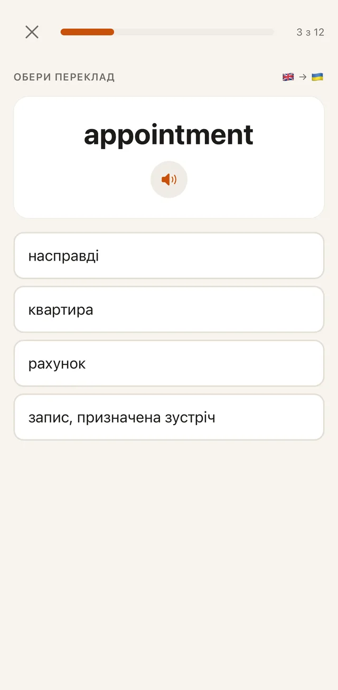
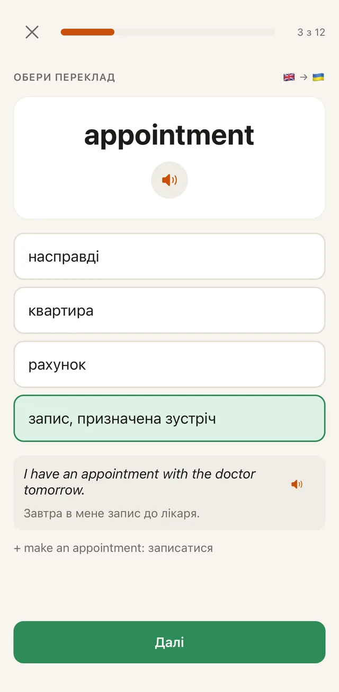
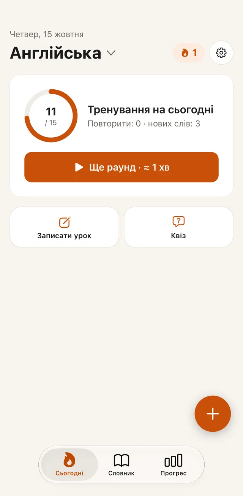
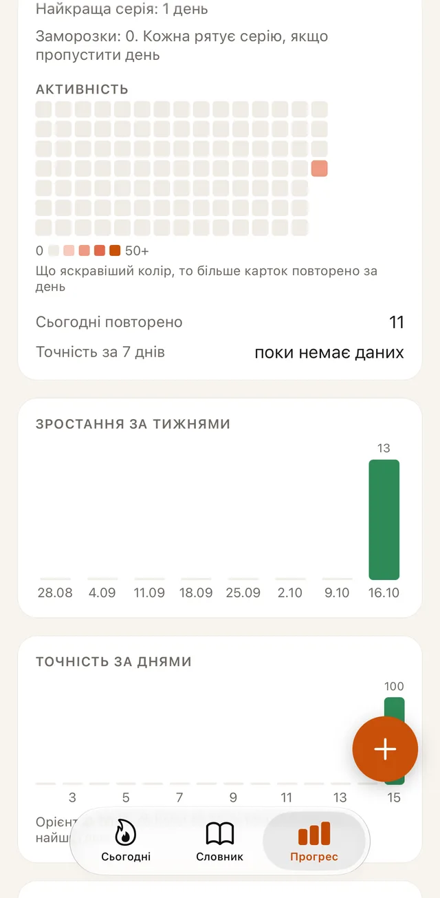

Записуєш слова прямо на уроці
Пишеш як зручно: «la mano рука» або просто слово. Переклад підставиться сам із вбудованого словника.
Англійська · іспанська · німецька
Записуєш нове слово за секунду, а Vocablito сам нагадає його саме тоді, коли воно вже майже забулося. П’ять хвилин на день, і слова переходять у довгу пам’ять.




Як це працює
Пишеш як зручно: «la mano рука» або просто слово. Переклад підставиться сам із вбудованого словника.
Застосунок уже знає, що повторити сьогодні. Коротке тренування з різних вправ: вибір, на слух, письмо, пропуск у реченні.
Кожне слово повертається через усе довші проміжки: день, тиждень, місяць. Те, що ти вже знаєш, не забирає час.
Чому це працює
Без повторення нове слово швидко вислизає. Якщо згадати його саме тоді, коли воно починає забуватися, пам’ять щоразу міцнішає, і наступне повторення можна відкласти надовше.
Коли намагаєшся самостійно згадати слово, воно запам’ятовується краще, ніж коли просто дивишся на нього. Тому Vocablito питає в обидва боки: спершу бачиш англійське й згадуєш переклад, згодом бачиш українське й згадуєш англійське.
Що всередині
Слухай вимову скільки завгодно разів, а у вправах на слух вгадуй слово з голосу.
Пропущений наголос, умлаут чи одна помилка в літері не рахуються провалом: застосунок покаже, що виправити.
Перевір себе на всьому словнику або тільки на словах останнього уроку.
Бачиш, скільки слів уже вивчено, і не хочеш переривати серію.
Познач слова, які хочеш розібрати, і покажи список на уроці.
Слова зберігаються на твоєму телефоні. Ми не показуємо рекламу й не збираємо аналітику.
Як це виглядає

Мови
Від побутових слів до пасток на кшталт actually, яке зовсім не «актуально».
borrow · lendІспанська Іспанії: тематичні набори, перевірка наголосів і ñ, синоніми.
echar de menosАртиклі der, die, das та умлаути: застосунок помітить, якщо рід не той.
das MädchenПереклади українською або російською. У кожного курсу свій словник і свій прогрес.
Питання
Vocablito зараз на фінальному тестуванні й незабаром з’явиться в App Store для iPhone.
Ні. Слова, повторення й озвучка працюють на телефоні без мережі.
Вбудований словник підказує переклад, коли ти додаєш слово. Його завжди можна змінити на свій.
Так. Можна почати з готових слів: приклади в них рівня A1-A2.
Слова зберігаються на твоєму телефоні. Ми не продаємо й не передаємо дані. Політика конфіденційності
Vocablito незабаром в App Store. Напиши нам, і ми повідомимо, щойно він вийде.
Повідомте мене